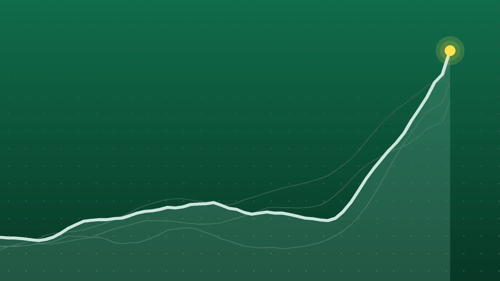

SportsExplainer
Brewers Sweep Dodgers to Reach First World Series Since 1982
A 103-win team from baseball’s smallest market ended the Dodgers’ bid for three straight titles and will host Game 1 on Oct. 23.

Quick take
- The Brewers swept the Dodgers 4-0 in the NLCS, clinching with a 6-4 win in Los Angeles on Oct. 15.
- It’s the franchise’s first World Series trip in 44 years and its first pennant since moving to the National League.
- The Dodgers, champions in 2024 and 2025, saw their bid for a three-peat end.
- Game 1 is Friday, Oct. 23, in Milwaukee against the winner of Guardians-Rays.
Why it's trending Milwaukee clinched the National League pennant late Thursday with a 6-4 comeback win at Dodger Stadium.
How the clincher went
Los Angeles grabbed control early. Shohei Ohtani’s three-run homer powered a four-run second inning, and the Dodgers led 4-0.
Milwaukee answered one piece at a time: two runs in the fourth, two in the fifth to tie it, the go-ahead run in the sixth and an insurance run in the ninth. Garrett Mitchell and David Hamilton homered, and Jake Bauers drove in three runs.
The Dodgers never scored again after the second inning. JoJo Romero picked up the win, and Aaron Ashby recorded the final nine outs for the save.
Why this one is a big deal
- A 44-year wait. Milwaukee’s only other pennant came in 1982, when the club still played in the American League. The Brewers lost that World Series to St. Louis in seven games, and they have never won a title. They moved to the National League in 1998.
- Revenge. The Dodgers swept Milwaukee in the NLCS a year ago, Yahoo Sports notes. This October, the script flipped.
- Small budget, big results. Milwaukee won a franchise-record 103 games with the 19th-largest luxury-tax payroll in baseball, about $154.7 million, while playing in MLB’s smallest media market.
- The champs are out. Los Angeles had won the past two World Series and was chasing the sport’s first three-peat since the 1998–2000 Yankees.
Who’s next
Cleveland led Tampa Bay 2-1 in the American League Championship Series after Thursday’s Game 3, with Game 4 set for Friday night. Whoever advances, this World Series will feature lean payrolls on both sides: Cleveland’s ranks second-lowest in the majors at $92.6 million, and Tampa Bay’s is fourth-lowest at $113.2 million, according to Yahoo Sports.
The Series opens Friday, Oct. 23, with Milwaukee hosting Game 1.
Back home in Milwaukee
Fans filled American Family Field for a watch party that organizers moved inside the ballpark because they expected a bigger crowd than the outdoor plaza could handle, WBAY reports. Longtime fans compared the moment to the 1982 celebration downtown, while younger ones said it was the first time they’d experienced anything like it.
What to watch
- Ticket prices. The cheapest resale seats for Game 1 reached $2,058, up 93% in three days.
- TV audience. Fox drew an average of 10.7 million viewers for the series opener.
- Labor clouds. Baseball’s labor contract expires in December. Owners have proposed a hard salary cap that the players’ union opposes, and a lockout is widely expected, per Yahoo Sports.
Quick answers
When does the 2026 World Series start?
Friday, Oct. 23, with Game 1 in Milwaukee.
Have the Brewers ever won the World Series?
No. Their only previous appearance was in 1982, a seven-game loss to the St. Louis Cardinals.
Who will the Brewers play?
The winner of the ALCS between the Cleveland Guardians and Tampa Bay Rays. Cleveland led that series 2-1 heading into Friday.
Sources
- Yahoo Sports Small-Market Brewers Clinch First NL Pennant With Sweep of DodgersOct. 16, 2026
- Yahoo Sports (AP) Milwaukee Brewers sweep Los Angeles Dodgers to win NL pennant and reach the World Series for the first time since 1982Oct. 16, 2026
- WBAY Brewers win pennant, sweep NLCS vs Dodgers as fans watch at American Family FieldOct. 16, 2026
- Sportradar MLB game data Game 4 box score and line scoreOct. 16, 2026